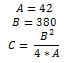
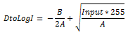
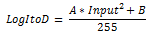
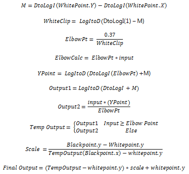

title: Brightness effect description: Use the brightness effect to control the brightness of the image. ms.assetid: 5088D4D4-DFC8-45D3-B1C3-D576742D931C keywords:
Use the brightness effect to control the brightness of the image.
The CLSID for this effect is CLSID_D2D1Brightness.
| Before |
|---|
|
| After |
ComPtr<ID2D1Effect> brightnessEffect;
m_d2dContext->CreateEffect(CLSID_D2D1Brightness, &brightnessEffect);
brightnessEffect->SetValue(D2D1_BRIGHTNESS_PROP_BLACK_POINT, D2D1::Vector2F(0.0f, 0.2f));
m_d2dContext->BeginDraw();
m_d2dContext->DrawImage(brightnessEffect.Get());
m_d2dContext->EndDraw();
| Property Display Name | Type and default value | Description |
|---|---|---|
| WhitePoint D2D1_BRIGHTNESS_PROP_WHITE_POINT | D2D1_VECTOR_2F {1.0f, 1.0f} | The upper portion of the brightness transfer curve. The white point adjusts the appearance of the brighter portions of the image. This property is for both the x value and the y value, in that order. Each of the values of this property are between 0 and 1, inclusive. |
| BlackPoint D2D1_BRIGHTNESS_PROP_BLACK_POINT | D2D1_VECTOR_2F {0.0f, 0.0f} | The lower portion of the brightness transfer curve. The black point adjusts the appearance of the darker portions of the image. This property is for both the x value and the y value, in that order. Each of the values of this property are between 0 and 1, inclusive. |
This effect uses the specified white and black points to generate a transfer function used to adjust the bitmap. The next equation describes the transfer function. The input intensities are defined between 0 and 1.

The effect algorithm implements an equation that creates the transfer function. We use this function to adjust the image pixels. The x and y values of the black point and the white point are the coordinates in two dimensions that are connected to form the transform. Each part of the final output equation:
Converts the image data from linear space to non-linear space using this equation:
Adjusts the image according to these values:
input is the input image pixel intensity values from 0 to 1.
*White Pt. (x, y)*the location of the transform curve for brighter pixel intensities.
Black Pt. (x, y) is the location of the transform curve for dimmer pixel intensities.
Converts the image data back to linear space using this equation: 
The final output equation and the component parts are shown here.

The output bitmap size is the same as the input bitmap size.
| Requirement | Value |
|---|---|
| Minimum supported client | Windows 8 and Platform Update for Windows 7 [desktop apps | Windows Store apps] |
| Minimum supported server | Windows 8 and Platform Update for Windows 7 [desktop apps | Windows Store apps] |
| Header | d2d1effects.h |
| Library | d2d1.lib, dxguid.lib |